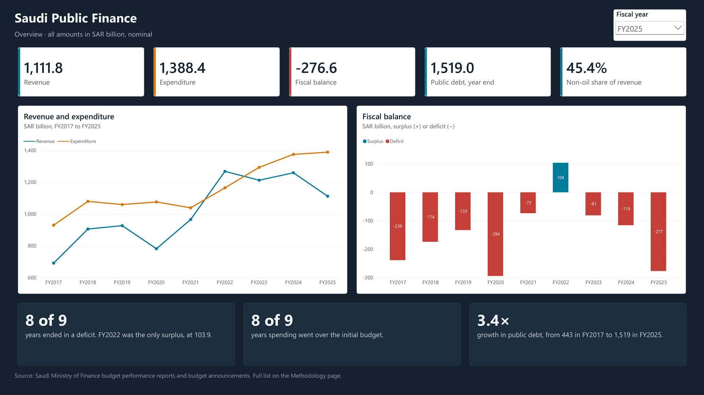
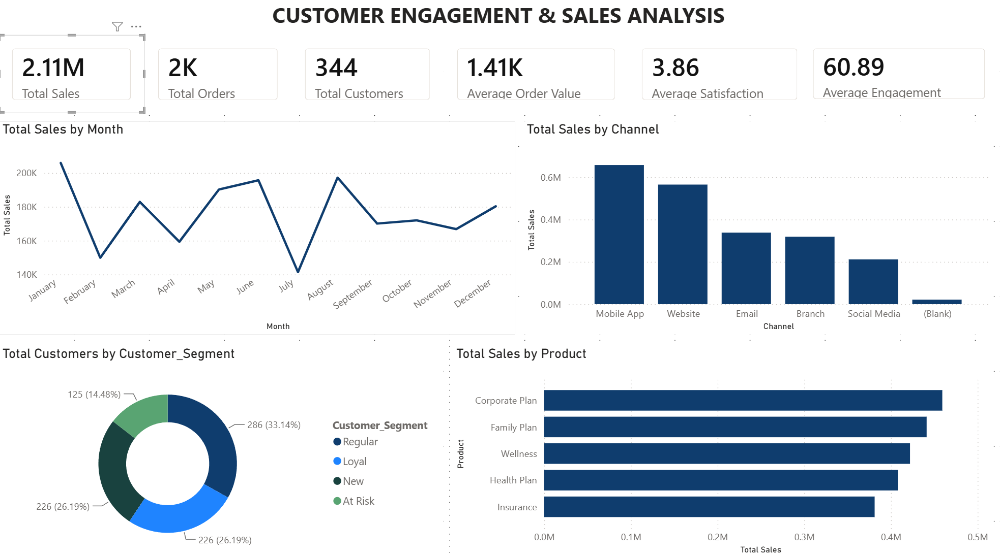
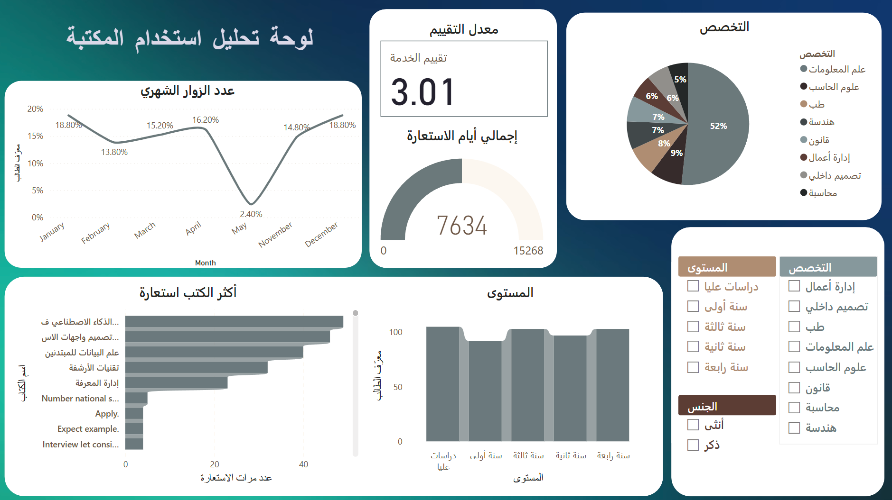

Information ScienceImam Abdulrahman Bin Faisal University2022 – 2026
Mudawi Murdhi Aldossari
I organize records and archives so they stay accurate and easy to find, and I analyze data to support decisions. My work spans medical records, national archives, libraries, machine learning and research on how reliable large language models are.
Information science graduate : records, archives and data / Mudawi Murdhi Aldossari. -- Eastern Province, Saudi Arabia : Imam Abdulrahman Bin Faisal University, 2026.
Includes one article published in Acta Innovations, 2026.
1. Records management. 2. Digital archiving. 3. Data analysis. 4. Machine learning. I. Title.
Class of 2026
Published paper
Acta Innovations, Vol. 64, 2026
Second place
Graduation Projects Track, Humanities Research and Innovation Forum 2026
Quarterfinalist
Tabby Imagine 2026
4 training placements
Hospital, national archive and two libraries
006.3Artificial intelligence
Research
Evaluating the Reliability of Large Language Models for Academic Advising in Higher Education: A Scenario-Based Benchmark of Policy Compliance, Decision Safety, and Policy Hallucination
Waed Waleed Al-Abweeny, Nouf Mohammad Aloajel, Aliaa Ibrahim Ahmed, Saja Hamad Ali Alshahrani, Mudawi Murdhi Abdullah Aldossari, Reem Mardi Saad Alzharani, Maram Mohamd Ali Alamri
Acta InnovationsVol. 64, pp. 784–797Published 28 October 2026
A scenario-based benchmark that tests how reliably large language models answer academic advising questions. Each response is judged on three measures.
Policy compliance
Whether the answer follows the advising policy that applies.
Decision safety
Whether the recommended action is safe for the student.
Policy hallucination
Whether the model invents rules or policies that do not exist.
A six-page Power BI dashboard that tracks Saudi government revenue, expenditure, the fiscal balance and public debt from FY2017 to FY2025, plus the FY2026 budget. Every figure comes from Ministry of Finance reports and cites the document and page it came from.

The Overview page, with FY2025 selected. The report has six pages.
Key findings
Deficit in 8 of 9 years. FY2022 was the only surplus.
Spending exceeded the initial budget in 8 of 9 years.
Non-oil revenue nearly doubled and reached 45.4% of revenue.
Public debt rose 3.4 times, to SAR 1,519 billion.
What I did
Collected the figures from eight Ministry of Finance reports, with the source and page of each value.
Cleaned and checked the data in Python with 53 consistency checks.
Built the data model and wrote DAX measures for budget vs actual, year-over-year change and debt to revenue.
Designed six report pages with one layout and a custom theme.
Analysis and Classification of Suspicious Digital Activities Using Machine Learning
Second place · Humanities Research and Innovation Forum 2026
A web-based system that analyzes digital activity and flags what looks suspicious. A Random Forest model labels each activity as normal or suspicious, the results and security alerts are stored in a database, and an interactive dashboard shows the findings.
Digital activity
Activity records enter the system
Analysis
Python prepares and analyzes the data
Random Forest
The model classifies each activity
Normal or suspicious
Suspicious results raise security alerts
Dashboard
Results and alerts are stored and visualized
Python
Flask
SQLAlchemy
HTML
CSS
JavaScript
Power BI
Power BI project
Customer Engagement and Sales Analysis
An interactive Power BI report built on a practice dataset of customer purchases. I cleaned the data in Power Query, wrote DAX measures for the key figures, and designed a one-page report that tracks sales by month, channel and product, and customers by segment.

The report page in Power BI Desktop.
Data preparation in Power Query
Set the correct data type for all 12 columns.
Standardized text in City, Channel and Product, so “mobile app” becomes “Mobile App”.
Removed rows that were exact duplicates while keeping repeat purchases by the same customer.
Kept rows with missing satisfaction scores instead of deleting those customers.
DAX measures
Total Sales
Total Orders
Total Customers
Average Order Value
Average Satisfaction
Average Engagement
Power BI
Power Query
DAX
Excel
Academic project · Power BI
Library Usage Data Analysis
An Arabic-language Power BI dashboard that analyzes how students use the library. It tracks monthly visits, the service rating, total borrowing days and the most borrowed books, and shows how users split by specialization and academic level. Slicers filter every chart by level, specialization and gender.

The dashboard in Power BI Desktop.
Power BI
Python
Excel
Academic project
Cloud-Based Data Management System
Designed a cloud-based database and a simple system for storing, accessing and managing data.
Firebase
Database design
651.5Records management
Practical training
Medical Records Trainee
Medical Records Department, Maternity and Children Hospital, Dammam
Managed and organized medical records while maintaining data accuracy and confidentiality.
Archived and indexed medical records to support reliable retrieval.
Assisted with medical coding and medical records analysis.
Used electronic health information systems to locate and manage patient records.
Records and Archives Trainee
National Center for Archives and Records
Organized and archived official records.
Verified document information and supported easy access to records.
Library Trainee
Central Library, Rayan Campus
Applied Dewey Decimal Classification (DDC) to library collections.
Helped users find information resources through the library catalog.
Library and Cultural Programs Trainee
House of Culture
Organized library collections and supported cultural and educational programs.
Prepared informational materials and improved visitor access to information resources.
001.44Incentives for research
Recognition
Tabby · Imagine 2026
Quarterfinalist
Proposed Tabby Missions, a product idea recognized for thoughtful reward-lifecycle rules, return handling and a clear proposal for controlled mission testing.
Issued 8 October 2026 · Certificate ID TBI-2026-126-817321
Humanities Research and Innovation Forum 2026 · Imam Abdulrahman Bin Faisal University
Second place
Graduation Projects Track. Awarded for our graduation research project, “Design of a Security System for Analyzing Suspicious Digital Activities Using Machine Learning.”
025.04Information storage and retrieval
Skills
Records and information
Information management
Records management
Digital archiving
Digital records and document management
Medical records
Electronic health information systems
Dewey Decimal Classification
Data and analysis
Data analysis
Data visualization
Power BI
DAX
Power Query
Microsoft Excel
Python
Pandas
SQL
Systems and development
Database management
Database design
Flask
SQLAlchemy
HTML
CSS
JavaScript
Firebase
Information systems
Machine learning and AI
Machine learning
Random Forest
LLM evaluation
Professional
Analytical thinking, research, problem solving, communication, teamwork, time management, attention to detail
Languages
Arabic (native) · English (fluent)
378Higher education
Education
Bachelor of Information Science
2022 – 2026
Imam Abdulrahman Bin Faisal University, Dammam, Saudi Arabia
Let’s talk
Open to roles in records and information management, digital archiving and data analysis. Based in the Eastern Province, Saudi Arabia.